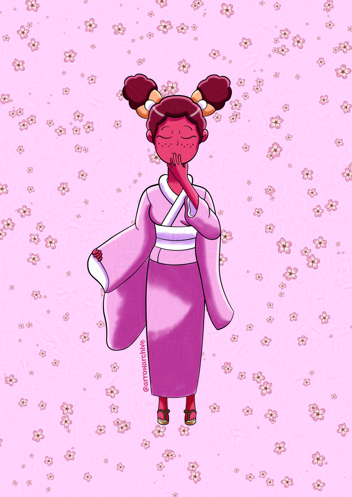

Introducing: Ember
Two years ago, I designed a character named Ember. She was a high-energy MMA fighter who could easily win a fight, but I rediscovered her and changed her characterization; she’s still an MMA fighter, but she is more reserved and only fights if she has to.
The reason I changed her personality was because of her role in a friend group. There was another character who was the voice of reason, but I scrapped them and made a new character with a “party girl” personality to take her place.
I changed Ember’s personality, but I barely changed her appearance; she has the same hairstyle as she did two years ago, but she has hairpins and wears a kimono.
I’m not gonna share her initial design, but it can be viewed on my Twitter